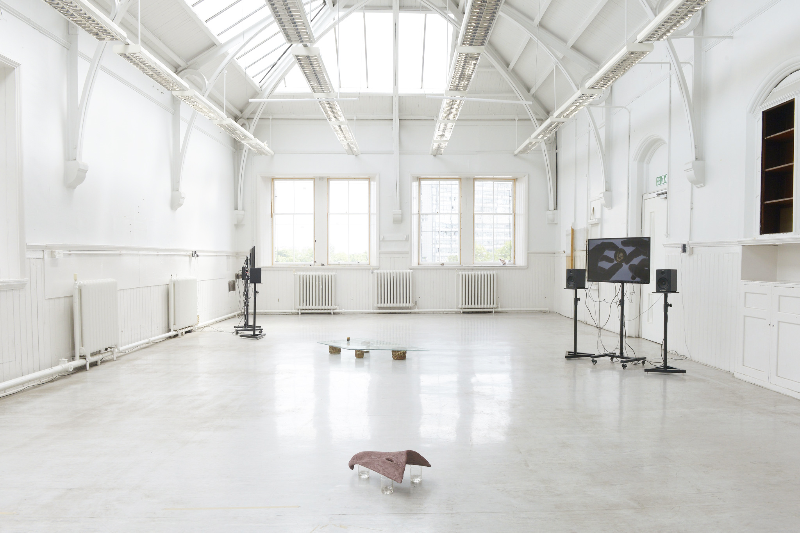
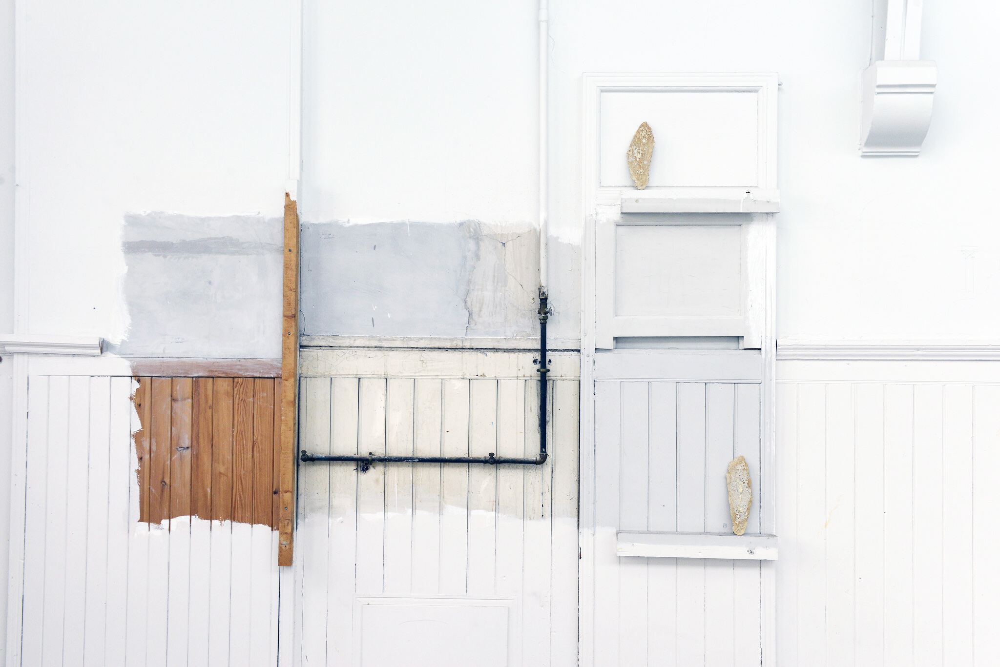
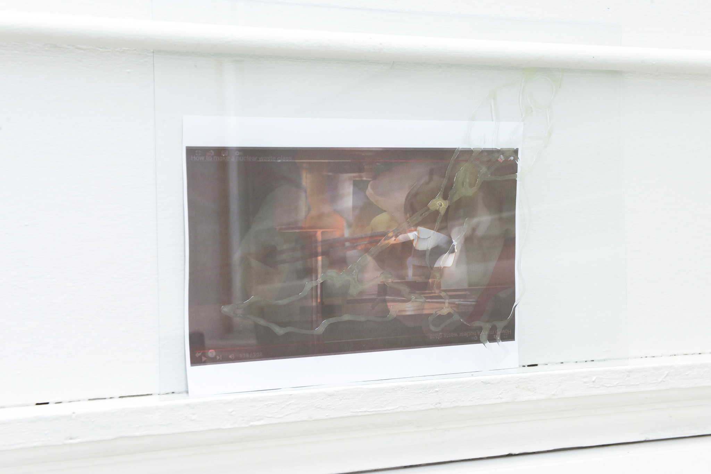
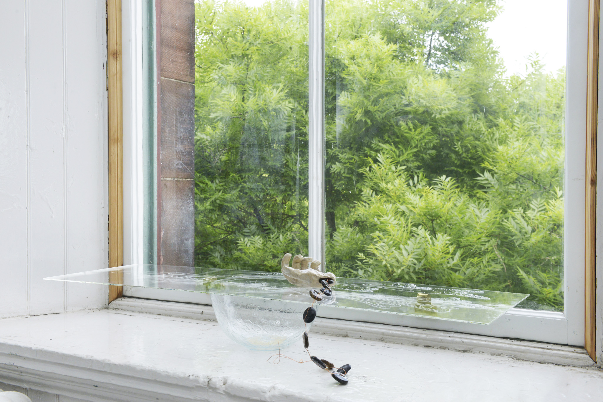
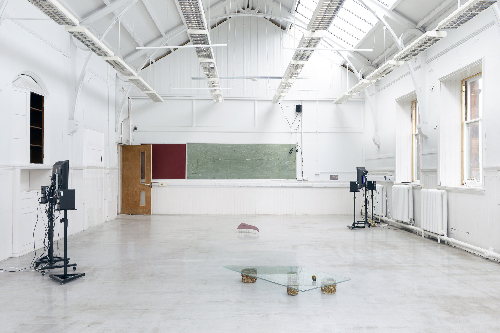
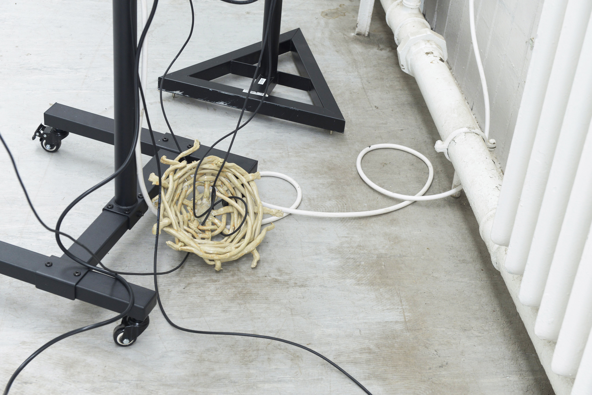
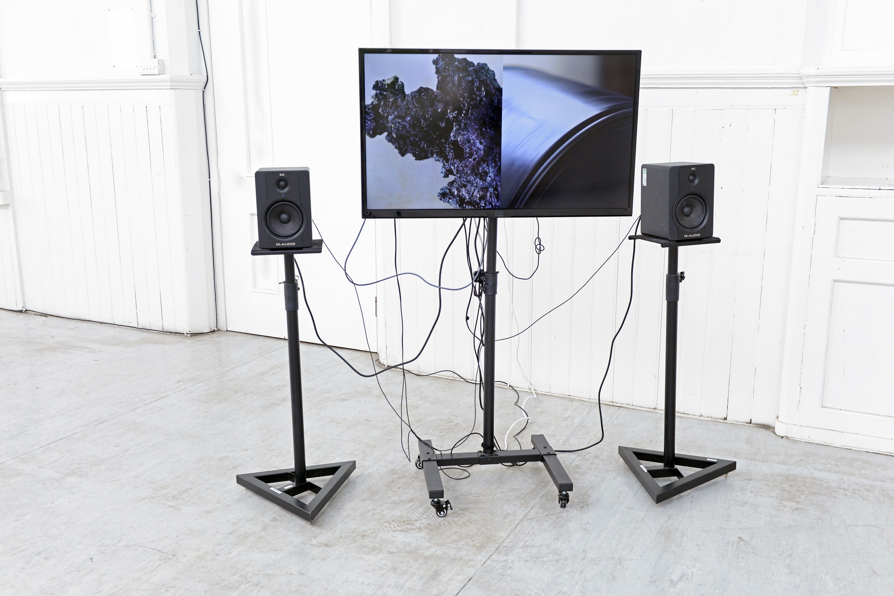

3-channel video (00:12:06),
beach sand, ceilp/seaweed ash, copper wire, fish glue, glass slag, glass tumblers, inkjet print on paper, kelp glass (beach sand, ceilp/seaweed ash), pyrex mixing bowl, restoration glass (made using 19th c. fourcault techniques), seaweed gin, standard float glass, stoneware, toughened glass table top
A Mineral Dance: Or How To Become Glass is a research project exploring the 18th Century Kelping Industry, which signalled the dissolution of tenant-landlord relations based on tithes and the emergence of capital-based land holdings, and the 20th century Nuclear Industry and their legacies on our coastal regions through an attempt to make glass out of seaweed and sand. The significance of glass as a material stems from both its role in the Kelping Industry, where seaweed ash was transported to industrial centres to be used in glassmaking, while vitrification is one method used to store radioactive waste in the nuclear industry.
Gathering seaweed and sand and processing these slowly by hand, opens up questions surrounding the energy and labour involved in creating such a ubiquitous material; the material legacies of historic and contemporary industries, the porous boundaries between human and mineral processes and the persistence of commodity chains which have shaped our coastal regions for centuries.
The project has so far resulted in a 3-channel video documenting the process of making glass, woven together with research surrounding the archaeological and geological legacies of human industries on the landscape. Much of the glass has been formed into beads and gifted to those involved in the process, acting as a communally owned artwork, while waste from the glass-making process has been formulated into ceramic glazes.
A Mineral Dance: Or How to Become Glass has been supported by Creative Scotland,
Historic Environment Scotland, The Hope Scott Trust and The Catherine Mackichan
Award.
[Image credit: Alan Dimmick (2022)]






